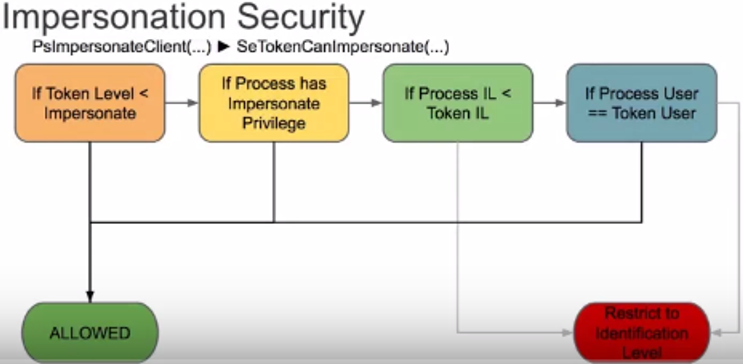

https://github.com/foxglovesec/RottenPotato
https://foxglovesecurity.com/2016/09/26/rotten-potato-privilege-escalation-from-service-accounts-to-system/

From this, it is clear that if we want to impersonate the token, we better be running as an account with SeImpersonate privilege (or equivalent). Luckily this includes many service accounts in Windows that penetration testers often end up running as. For example, the IIS and SQL Server accounts.
RottenPotato
Local Privilege Escalation from Windows Service Accounts to SYSTEM
For a technical overview of this exploit see our blog post at https://foxglovesecurity.com/2016/09/26/rotten-potato-privilege-escalation-from-service-accounts-to-system/
Usage:
Compile.
Use ILMerge to combine Potato.exe, SharpCifs.dll NHttp.dll, and Microsoft.VisualStudio.OLE.Interop.dll. This will produce a single, portable binary.
Get a meterpreter shell on the target system
use incognito
Run the binary from step.2
impersonate_token "NT AUTHORITY\SYSTEM"
It is important to impersonate the token (or run list_tokens -u) quickly after runnning the binary. With the current implementation, the token seems to disappear shortly after the binary is run. It is also important to follow the order of the steps. Make sure you "use incognito" before running the binary.
See videos at https://www.youtube.com/watch?v=3CPdKMeB0UY and https://www.youtube.com/watch?v=wK0r-TZR7w8 for example.